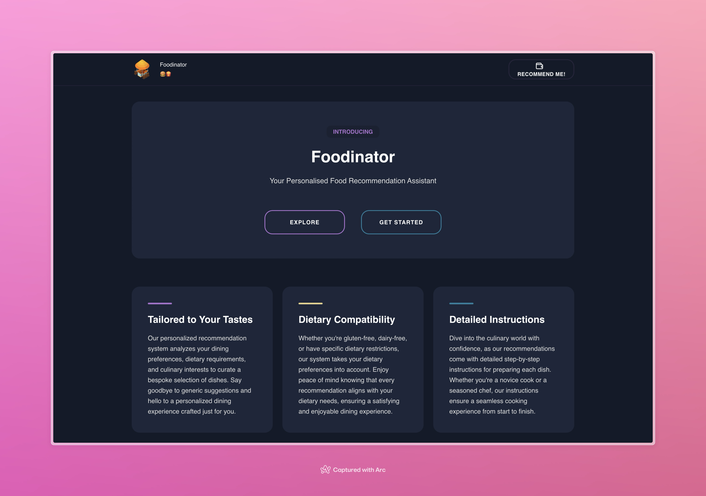
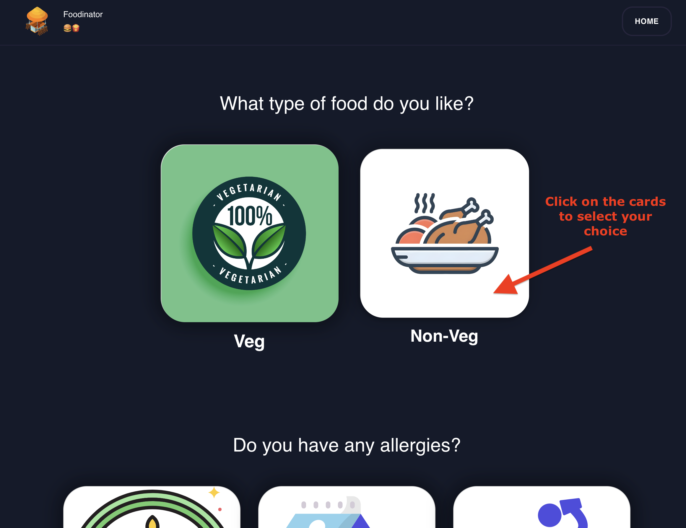
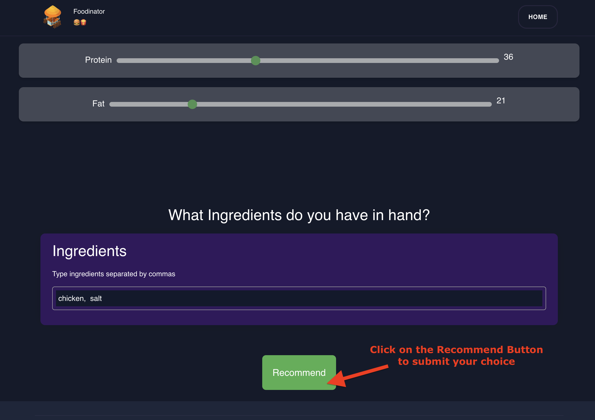
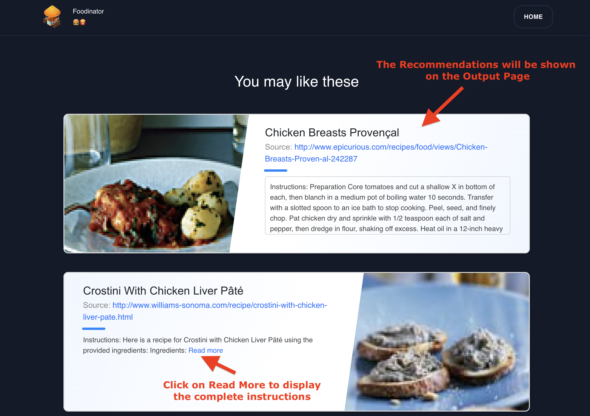
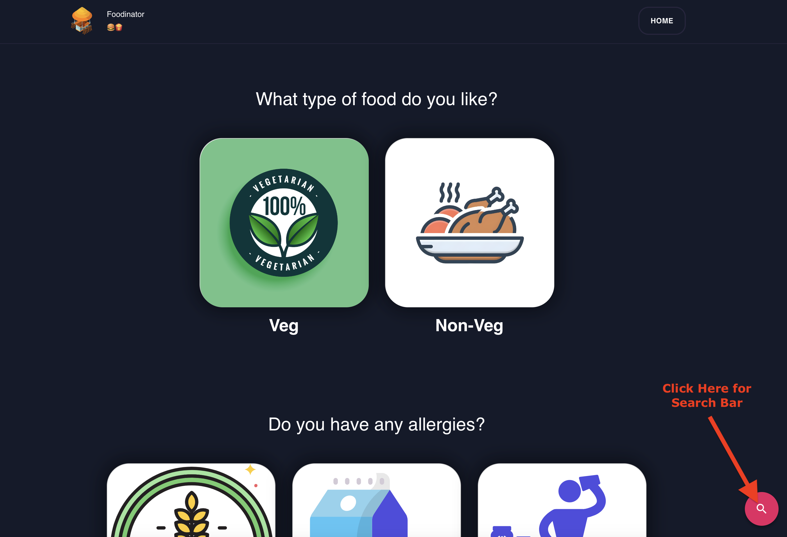
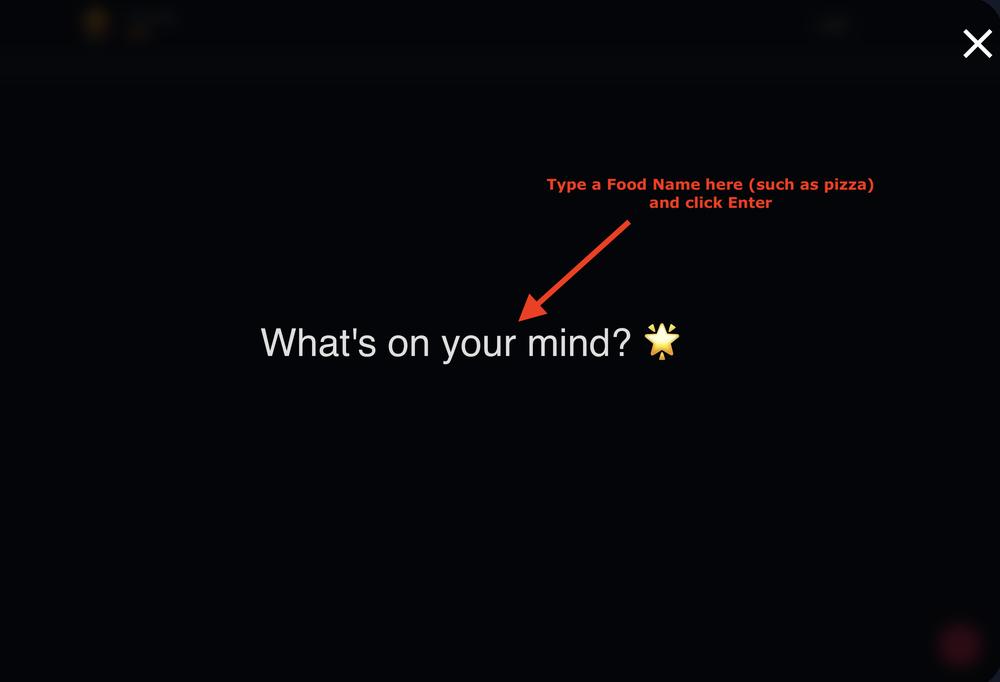
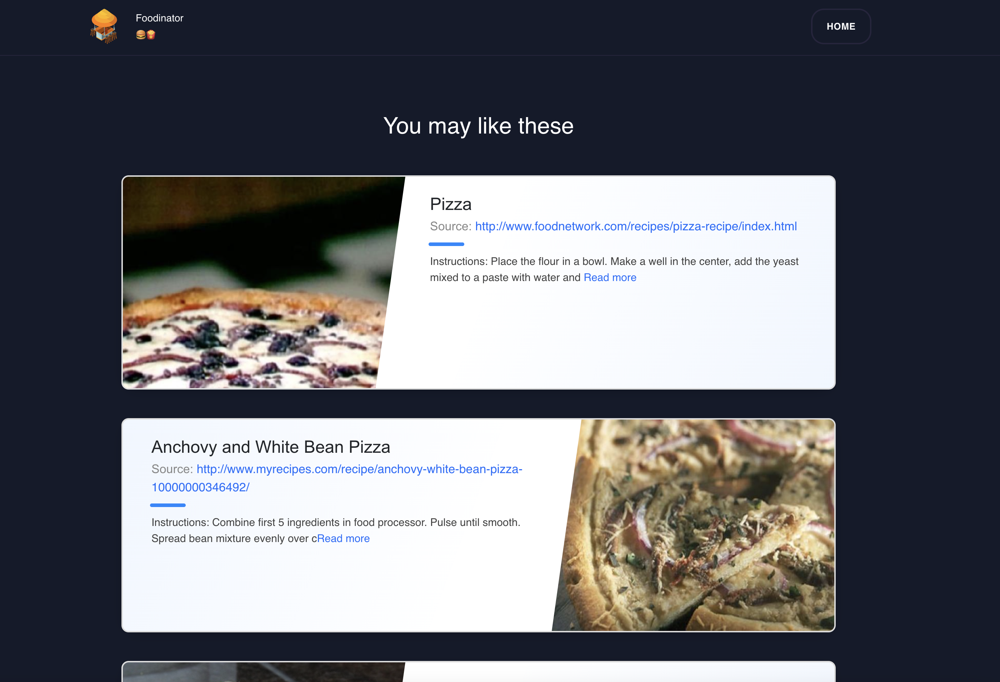
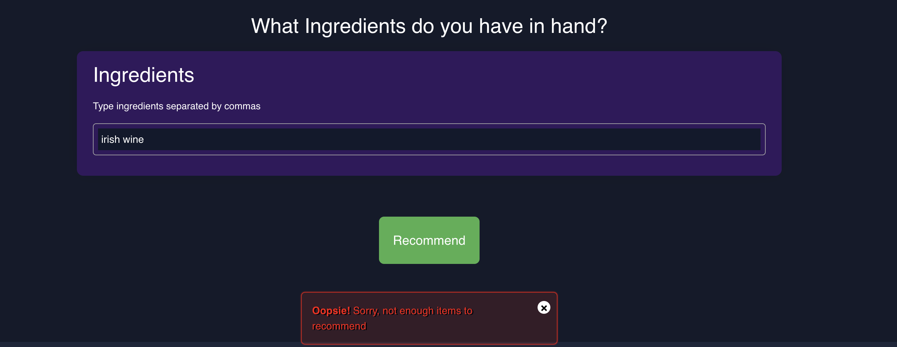

Walkthrough
- Open the system in your browser by going to
http://localhost:3000.

-
Click on the "Get Started" button to start using the system.
2.1. If you don't have a clear idea of what you want to eat, then enter your preferences, such as the type of food you like, any allergens you have, and your nutritional requirements.

2.2. Click on the "Recommend" button to get food recommendations based on your preferences.

2.3 The system will display a list of recommended food items along with detailed information about each food item.

-
Now, If you have a clear idea of what you want to eat, then click on the "Search" icon and enter the name of the food item you are looking for.

3.1 This will open the search bar where you can enter the name of the food item you are looking for.

3.1. The system will display detailed information about the food item you searched for.

Please note if there are no recommendations available based on your preferences, the system will display a message saying "No recommendations found".
This was done due to the lack of data in the dataset. (2000 records only)
